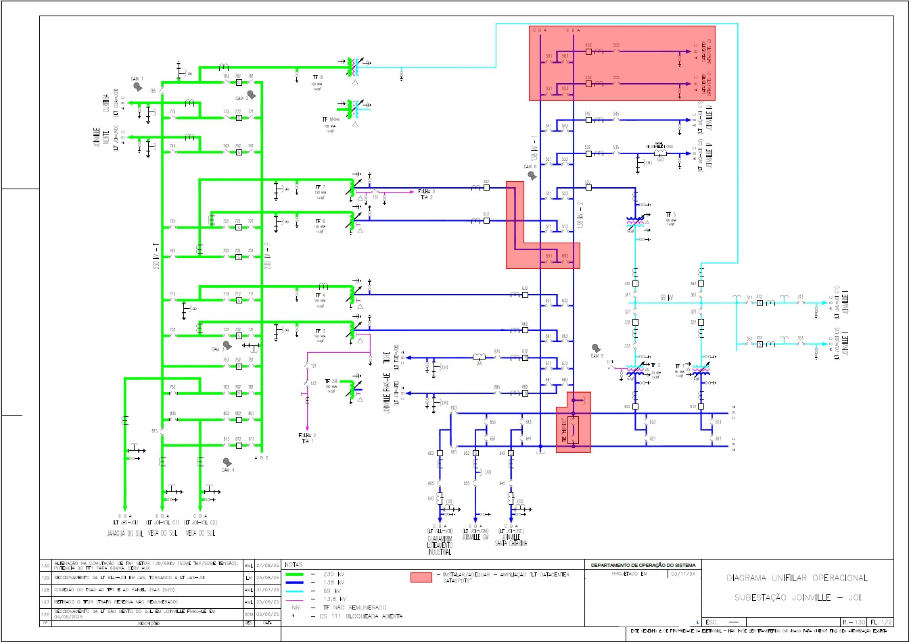
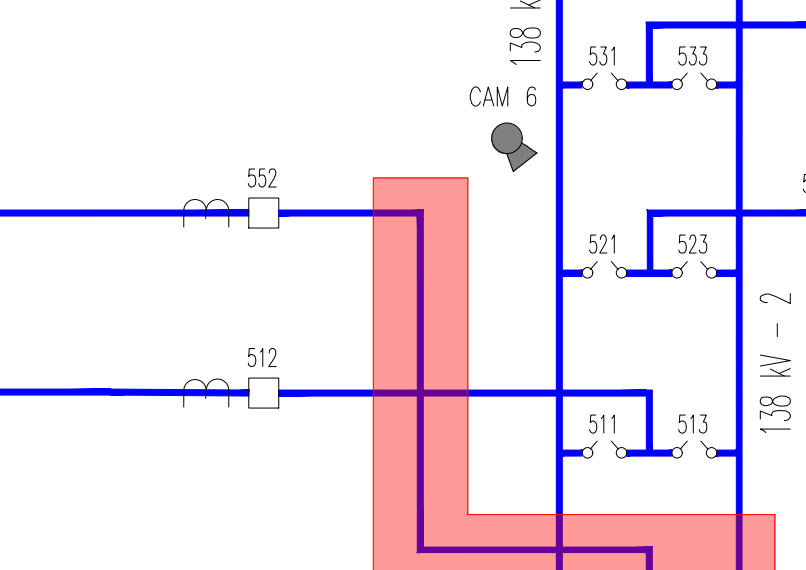
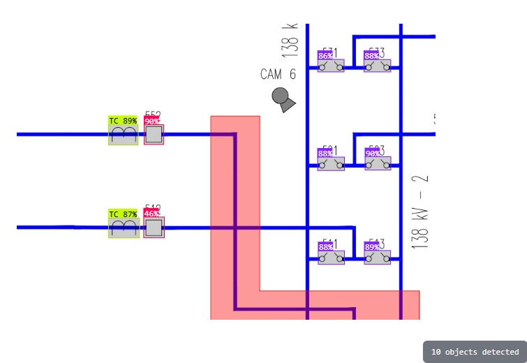

Processamento de Diagramas Unifilares
Fluxo de Análise Automatizada via Machine Learning
PASSO 1
Upload do Documento
Usuário envia o arquivo do diagrama unifilar via aplicação web

Input
PDF, JPEG, JPG, PNG
Output
Arquivo original
PASSO 2
Conversão e Segmentação
Arquivo convertido em PNG e dividido em N chunks com interseção de ~15%

Input
Arquivo original
Output
Múltiplos chunks PNG
Tecnologia
Python: SAHI (Slicing Aided Hyper Inference)
PASSO 3
Análise por ML
Cada chunk processado individualmente via Machine Learning para detecção de equipamentos com precisão >90%. O modelo foi treinado com inúmeras imagens de diagramas unifilares reais e dados artificiais gerados em nosso simulador (40% real, 60% simulado).

Input
Múltiplos chunks PNG
Output
Detecções por chunk
Tecnologia
RF-DETR Object Detection (High)
PASSO 4
Reconstrução da Imagem
Junção dos chunks processados para reconstruir o diagrama completo

Input
Detecções por chunk
Output
Diagrama reconstruído
Tecnologia
SAHI (Slicing Aided Hyper Inference)
PASSO 5
Visualização e Listagem
Apresentação do diagrama completo com equipamentos destacados e listagem detalhada
Input
Diagrama reconstruído
Output
Interface visual + Lista de equipamentos
PASSO 6
Interação via ChatBot
Possibilidade de consultar informações do diagrama através de conversação
Input
Dados do diagrama
Output
Respostas contextuais